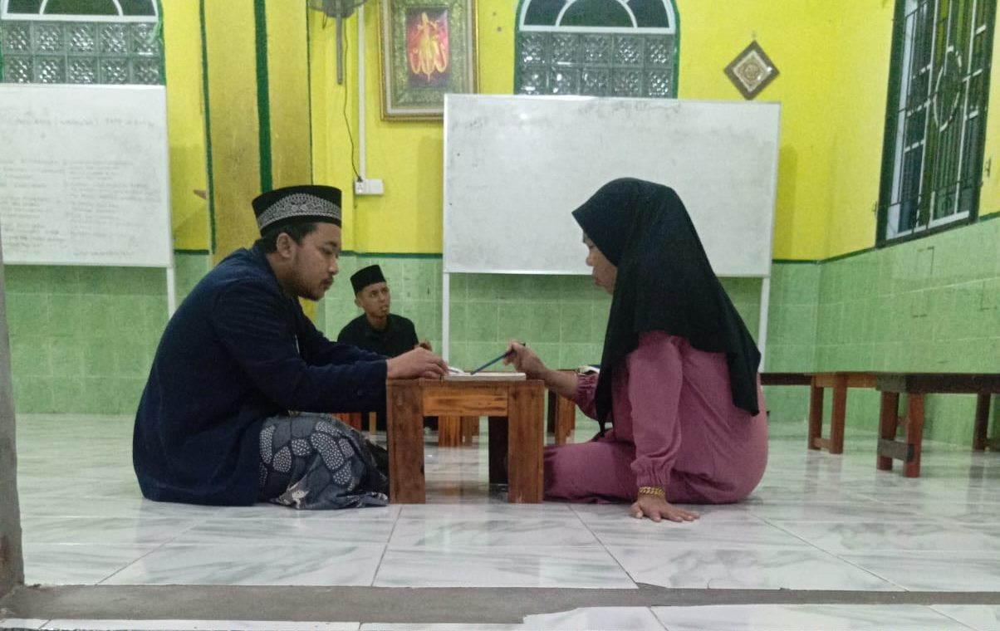

TPQ Husnul Khatimah
Untuk anak usia dini hingga remaja

Pendidikan dasar Al-Qur'an
Unit pendidikan utama yayasan. Santri dibimbing membaca, menulis, dan melafalkan Al-Qur'an sesuai kaidah tajwid dan makharijul huruf yang benar.
Fokus pembelajaran
- Metode Iqro' dari dasar hingga bacaan Al-Qur'an yang tartil.
- Kurikulum berstandar Badan Musyawarah Guru Al-Qur'an (BMGQ) Kecamatan Belakang Padang.
- Pembiasaan adab harian, hafalan doa, dan praktik sholat fardhu.
- Evaluasi berkala, ujian munaqasyah, dan wisuda santri.